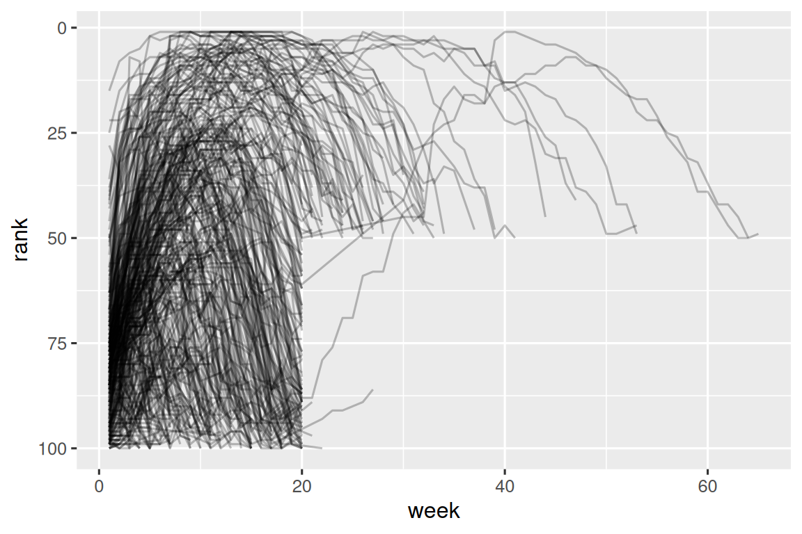
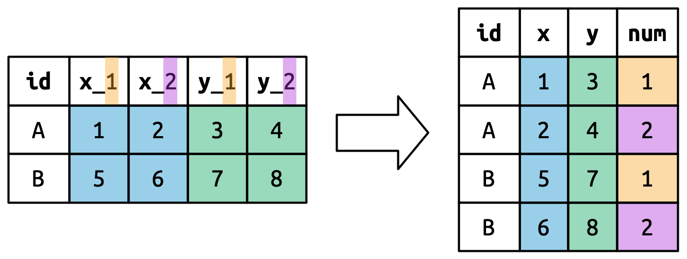

5 Nettoyage de données
5.1 Introduction
« Toutes les familles heureuses se ressemblent, mais chaque famille malheureuse l’est à sa façon. »
— Leo Tolstoï
« Tous les jeux de données propres se ressemblent, mais chaque jeu de données désordonné l’est à sa façon. »
— Hadley Wickham
Dans ce chapitre, vous apprendrez une méthode cohérente pour organiser vos données dans R à l’aide d’un système appelé tidy data (données propres). Mettre vos données dans ce format nécessite du travail à court terme, mais ce travail s’avère payant à long terme. Une fois que vous avez des données propres et les outils fournis par les packages du tidyverse, vous passerez beaucoup moins de temps à manipuler les données d’une forme à une autre, ce qui vous permettra de passer plus de temps sur les questions relatives aux données qui vous intéressent.
Dans ce chapitre, vous apprendrez d’abord la définition des données propres et la verrez appliquée à un simple jeu de données d’exemple. Ensuite, nous plongerons dans l’outil principal que vous utiliserez pour nettoyer les données : le pivot. Le pivot vous permet de modifier la forme de vos données sans changer les valeurs.
5.1.1 Conditions préalables
Dans ce chapitre, nous nous concentrerons sur tidyr, un package qui fournit un tas d’outils pour aider à nettoyer vos jeux de données désordonnés. tidyr est un membre du tidyverse principal.
À partir de ce chapitre, nous supprimerons le message de chargement de library(tidyverse).
5.2 Données propres
Vous pouvez représenter les mêmes données sous-jacentes de plusieurs façons. L’exemple ci-dessous montre les mêmes données organisées de trois façons différentes. Chaque jeu de données montre les mêmes valeurs de quatre variables : pays, année, population, et nombre de cas documentés de tuberculose (country, year, population, cases), mais chaque jeu de données organise les valeurs d’une manière différente.
table1
#> # A tibble: 6 × 4
#> country year cases population
#> <chr> <dbl> <dbl> <dbl>
#> 1 Afghanistan 1999 745 19987071
#> 2 Afghanistan 2000 2666 20595360
#> 3 Brazil 1999 37737 172006362
#> 4 Brazil 2000 80488 174504898
#> 5 China 1999 212258 1272915272
#> 6 China 2000 213766 1280428583
table2
#> # A tibble: 12 × 4
#> country year type count
#> <chr> <dbl> <chr> <dbl>
#> 1 Afghanistan 1999 cases 745
#> 2 Afghanistan 1999 population 19987071
#> 3 Afghanistan 2000 cases 2666
#> 4 Afghanistan 2000 population 20595360
#> 5 Brazil 1999 cases 37737
#> 6 Brazil 1999 population 172006362
#> # ℹ 6 more rows
table3
#> # A tibble: 6 × 3
#> country year rate
#> <chr> <dbl> <chr>
#> 1 Afghanistan 1999 745/19987071
#> 2 Afghanistan 2000 2666/20595360
#> 3 Brazil 1999 37737/172006362
#> 4 Brazil 2000 80488/174504898
#> 5 China 1999 212258/1272915272
#> 6 China 2000 213766/1280428583Ce sont toutes des représentations des mêmes données sous-jacentes, mais elles ne sont pas toutes faciles à utiliser. L’une d’elles, table1, sera beaucoup plus facile à utiliser dans le tidyverse car elle est propre.
Il y a trois règles interdépendantes qui rendent un jeu de données propre :
- Chaque variable est une colonne ; chaque colonne est une variable.
- Chaque observation est une ligne ; chaque ligne est une observation.
- Chaque valeur est une cellule ; chaque cellule est une seule valeur.
La Figure 5.1 montre les règles visuellement.

Pourquoi vous assurer que vos données sont propres ? Il y a deux principaux avantages :
Il y a un avantage général à choisir une seule façon cohérente de stocker les données. Si vous avez une structure de données cohérente, il est plus facile d’apprendre les outils qui fonctionnent avec celle-ci car ils ont une uniformité sous-jacente.
Il y a un avantage spécifique à placer les variables dans les colonnes car cela permet à la nature vectorisée de R de briller. Comme vous l’avez appris en Section 3.3.1 et Section 3.5.2, la plupart des fonctions R intégrées fonctionnent avec des vecteurs de valeurs. Cela rend la transformation de données propres particulièrement naturelle.
dplyr, ggplot2, et tous les autres packages du tidyverse sont conçus pour fonctionner avec des données propres. Voici quelques petits exemples montrant comment vous pourriez travailler avec table1.
# Calculer le taux par 10 000
table1 |>
mutate(rate = cases / population * 10000)
#> # A tibble: 6 × 5
#> country year cases population rate
#> <chr> <dbl> <dbl> <dbl> <dbl>
#> 1 Afghanistan 1999 745 19987071 0.373
#> 2 Afghanistan 2000 2666 20595360 1.29
#> 3 Brazil 1999 37737 172006362 2.19
#> 4 Brazil 2000 80488 174504898 4.61
#> 5 China 1999 212258 1272915272 1.67
#> 6 China 2000 213766 1280428583 1.67
# Calculer le total des cas par année
table1 |>
group_by(year) |>
summarize(total_cases = sum(cases))
#> # A tibble: 2 × 2
#> year total_cases
#> <dbl> <dbl>
#> 1 1999 250740
#> 2 2000 296920
# Visualiser les changements au fil du temps
ggplot(table1, aes(x = year, y = cases)) +
geom_line(aes(group = country), color = "grey50") +
geom_point(aes(color = country, shape = country)) +
scale_x_continuous(breaks = c(1999, 2000)) # les tirets sur l'axe des x en 1999 et 2000![Cette figure montre le nombre de cas en 1999 et 2000 pour l'Afghanistan, le Brésil et la Chine, avec l'année sur l'axe des x et le nombre de cas sur l'axe des y. Chaque point du graphique représente le nombre de cas dans un pays donné dans une année donnée. Les points pour chaque pays se distinguent des autres par la couleur et la forme et sont connectés avec une ligne, ce qui donne trois lignes non parallèles et non intersectantes. Les nombres de cas en Chine sont les plus élevés pour 1999 et 2000, avec des valeurs supérieures à 200 000 pour les deux années. Le nombre de cas au Brésil est approximativement 40 000 en 1999 et approximativement 75 000 en 2000. Les nombres de cas en Afghanistan sont les plus bas pour 1999 et 2000, avec des valeurs qui semblent être très proches de 0 sur cette échelle.](data-tidy_files/figure-html/unnamed-chunk-3-1.png)
5.2.1 Exercices
Pour chacune des tables d’exemple, décrivez ce que chaque observation et chaque colonne représente.
-
Esquissez le processus que vous utiliseriez pour calculer le
taux(de cas dans la population) pourtable2ettable3. Vous devrez effectuer quatre opérations :- Extraire le nombre de cas de tuberculose par pays par année.
- Extraire la population correspondante par pays par année.
- Diviser les cas par la population, et multiplier par 10 000.
- Stocker au bon endroit.
Vous n’avez pas encore appris toutes les fonctions dont vous auriez besoin pour effectuer réellement ces opérations, mais vous devriez quand même être capable de réfléchir aux transformations dont vous auriez besoin.
5.3 Allonger les données
Les principes des données propres peuvent sembler si évidents que vous vous demandez si vous rencontrerez jamais un jeu de données qui n’est pas propre. Malheureusement, la plupart des données réelles ne sont pas propres. Il y a deux principales raisons :
Les données sont souvent organisées pour faciliter un objectif autre que l’analyse. Par exemple, il est courant que les données soient structurées pour faciliter la saisie des données, et non l’analyse.
La plupart des gens ne sont pas familiers avec les principes des données propres, et il est difficile de les deviner vous-même sauf si vous passez beaucoup de temps à travailler avec des données.
Cela signifie que la plupart des analyses réelles nécessiteront au moins un peu de nettoyage. Vous commencerez par déterminer quelles sont les variables et observations sous-jacentes. Parfois, c’est facile ; d’autres fois, vous devrez consulter les personnes qui ont généré les données à l’origine. Ensuite, vous pivoter vos données dans une forme propre, avec les variables dans les colonnes et les observations dans les lignes.
tidyr fournit deux fonctions pour pivoter les données : pivot_longer() et pivot_wider(). Nous commencerons d’abord par pivot_longer() car c’est le cas le plus courant. Plongeons-nous dans quelques exemples.
5.3.1 Données dans les noms de colonnes
Le jeu de données billboard enregistre le classement billboard des chansons de l’année 2000 :
billboard
#> # A tibble: 317 × 79
#> artist track date.entered wk1 wk2 wk3 wk4 wk5
#> <chr> <chr> <date> <dbl> <dbl> <dbl> <dbl> <dbl>
#> 1 2 Pac Baby Don't Cry (Ke… 2000-02-26 87 82 72 77 87
#> 2 2Ge+her The Hardest Part O… 2000-09-02 91 87 92 NA NA
#> 3 3 Doors Down Kryptonite 2000-04-08 81 70 68 67 66
#> 4 3 Doors Down Loser 2000-10-21 76 76 72 69 67
#> 5 504 Boyz Wobble Wobble 2000-04-15 57 34 25 17 17
#> 6 98^0 Give Me Just One N… 2000-08-19 51 39 34 26 26
#> # ℹ 311 more rows
#> # ℹ 71 more variables: wk6 <dbl>, wk7 <dbl>, wk8 <dbl>, wk9 <dbl>, …Dans ce jeu de données, chaque observation est une chanson. Les trois premières colonnes (artist, track et date.entered) sont des variables qui décrivent la chanson. Ensuite, nous avons 76 colonnes (wk1-wk76) qui décrivent le classement de la chanson chaque semaine1. Ici, les noms de colonnes sont une variable (la semaine, week) et les valeurs des cellules en sont une autre (le classement, rank).
Pour nettoyer ces données, nous utiliserons pivot_longer() :
billboard |>
pivot_longer(
cols = starts_with("wk"),
names_to = "week",
values_to = "rank"
)
#> # A tibble: 24,092 × 5
#> artist track date.entered week rank
#> <chr> <chr> <date> <chr> <dbl>
#> 1 2 Pac Baby Don't Cry (Keep... 2000-02-26 wk1 87
#> 2 2 Pac Baby Don't Cry (Keep... 2000-02-26 wk2 82
#> 3 2 Pac Baby Don't Cry (Keep... 2000-02-26 wk3 72
#> 4 2 Pac Baby Don't Cry (Keep... 2000-02-26 wk4 77
#> 5 2 Pac Baby Don't Cry (Keep... 2000-02-26 wk5 87
#> 6 2 Pac Baby Don't Cry (Keep... 2000-02-26 wk6 94
#> 7 2 Pac Baby Don't Cry (Keep... 2000-02-26 wk7 99
#> 8 2 Pac Baby Don't Cry (Keep... 2000-02-26 wk8 NA
#> 9 2 Pac Baby Don't Cry (Keep... 2000-02-26 wk9 NA
#> 10 2 Pac Baby Don't Cry (Keep... 2000-02-26 wk10 NA
#> # ℹ 24,082 more rowsAprès avoir spécifié les données, il y a trois arguments clés :
-
colsspécifie les colonnes qui doivent être pivotées, c’est-à-dire les colonnes qui ne sont pas des variables. Cet argument utilise la même syntaxe queselect()donc ici nous pourrions utiliser!c(artist, track, date.entered)oustarts_with("wk"). -
names_tonomme la variable qui stocke les noms de colonnes, nous avons nommé cette variableweek. -
values_tonomme la variable qui stocke les valeurs des cellules, nous avons nommé cette variablerank.
Notez que dans le code, "week" et "rank" sont entre guillemets car ce sont de nouvelles variables que nous créons, elles n’existent pas encore dans les données quand nous exécutons l’appel pivot_longer().
Maintenant, tournons notre attention vers le data frame résultant, plus long. Que se passe-t-il si une chanson est dans le top 100 pendant moins de 76 semaines ? Prenez par exemple « Baby Don’t Cry » de 2 Pac. La sortie ci-dessus suggère qu’elle ne figurait dans le top 100 que pendant 7 semaines, et toutes les semaines restantes sont remplies de valeurs manquantes. Ces NAs ne représentent pas vraiment des observations inconnues ; elles ont été forcées d’exister par la structure du jeu de données2, nous pouvons donc demander à pivot_longer() de s’en débarrasser en définissant values_drop_na = TRUE :
billboard |>
pivot_longer(
cols = starts_with("wk"),
names_to = "week",
values_to = "rank",
values_drop_na = TRUE
)
#> # A tibble: 5,307 × 5
#> artist track date.entered week rank
#> <chr> <chr> <date> <chr> <dbl>
#> 1 2 Pac Baby Don't Cry (Keep... 2000-02-26 wk1 87
#> 2 2 Pac Baby Don't Cry (Keep... 2000-02-26 wk2 82
#> 3 2 Pac Baby Don't Cry (Keep... 2000-02-26 wk3 72
#> 4 2 Pac Baby Don't Cry (Keep... 2000-02-26 wk4 77
#> 5 2 Pac Baby Don't Cry (Keep... 2000-02-26 wk5 87
#> 6 2 Pac Baby Don't Cry (Keep... 2000-02-26 wk6 94
#> # ℹ 5,301 more rowsLe nombre de lignes est maintenant beaucoup plus faible, ce qui indique que beaucoup de lignes avec NAs ont été supprimées.
Vous pourriez aussi vous demander ce qui se passe si une chanson est dans le top 100 pendant plus de 76 semaines ? Nous ne pouvons pas le dire à partir de ces données, mais vous pourriez deviner que des colonnes supplémentaires wk77, wk78, … seraient ajoutées au jeu de données.
Ces données sont maintenant propres, mais nous pourrions faciliter les calculs futurs en convertissant les valeurs de week de chaînes de caractères en nombres à l’aide de mutate() et de readr::parse_number(). parse_number() est une fonction pratique qui extraira le premier nombre d’une chaîne, en ignorant tout le reste du texte.
billboard_longer <- billboard |>
pivot_longer(
cols = starts_with("wk"),
names_to = "week",
values_to = "rank",
values_drop_na = TRUE
) |>
mutate(
week = parse_number(week)
)
billboard_longer
#> # A tibble: 5,307 × 5
#> artist track date.entered week rank
#> <chr> <chr> <date> <dbl> <dbl>
#> 1 2 Pac Baby Don't Cry (Keep... 2000-02-26 1 87
#> 2 2 Pac Baby Don't Cry (Keep... 2000-02-26 2 82
#> 3 2 Pac Baby Don't Cry (Keep... 2000-02-26 3 72
#> 4 2 Pac Baby Don't Cry (Keep... 2000-02-26 4 77
#> 5 2 Pac Baby Don't Cry (Keep... 2000-02-26 5 87
#> 6 2 Pac Baby Don't Cry (Keep... 2000-02-26 6 94
#> # ℹ 5,301 more rowsMaintenant que nous avons tous les numéros de semaine dans une variable et toutes les valeurs de classement dans une autre, nous sommes dans de bonnes conditions pour visualiser comment les classements des chansons varient au fil du temps. Le code est présenté ci-dessous et le résultat se trouve en Figure 5.2. Nous pouvons voir que très peu de chansons restent dans le top 100 pendant plus de 20 semaines.
billboard_longer |>
ggplot(aes(x = week, y = rank, group = track)) +
geom_line(alpha = 0.25) +
scale_y_reverse()
20 et le classement est > 50." width="576">5.3.3 Plusieurs variables dans les noms de colonnes
Une situation plus difficile se produit quand vous avez plusieurs informations entassées dans les noms de colonnes, et vous voudriez les stocker dans des variables nouvelles séparées. Par exemple, prenez le jeu de données who2, la source de table1 et des autres tables que vous avez vues ci-dessus :
who2
#> # A tibble: 7,240 × 58
#> country year sp_m_014 sp_m_1524 sp_m_2534 sp_m_3544 sp_m_4554
#> <chr> <dbl> <dbl> <dbl> <dbl> <dbl> <dbl>
#> 1 Afghanistan 1980 NA NA NA NA NA
#> 2 Afghanistan 1981 NA NA NA NA NA
#> 3 Afghanistan 1982 NA NA NA NA NA
#> 4 Afghanistan 1983 NA NA NA NA NA
#> 5 Afghanistan 1984 NA NA NA NA NA
#> 6 Afghanistan 1985 NA NA NA NA NA
#> # ℹ 7,234 more rows
#> # ℹ 51 more variables: sp_m_5564 <dbl>, sp_m_65 <dbl>, sp_f_014 <dbl>, …Ce jeu de données, collecté par l’Organisation Mondiale de la Santé, enregistre des informations sur les diagnostics de tuberculose. Il y a deux colonnes qui sont déjà des variables et sont faciles à interpréter : country et year. Elles sont suivies de 56 colonnes comme sp_m_014, ep_m_4554, et rel_m_3544. Si vous regardez ces colonnes assez longtemps, vous remarquerez qu’il y a un modèle. Chaque nom de colonne est composé de trois éléments séparés par _. Le premier élément, sp/rel/ep, décrit la méthode utilisée pour le diagnostic, le deuxième élément, m/f est le sexe (codé comme une variable binaire dans ce jeu de données), et le troisième élément, 014/1524/2534/3544/4554/5564/65 est la plage d’âge (014 représente 0-14, par exemple).
Donc dans ce cas nous avons six éléments d’information enregistrés dans who2 : le pays et l’année (déjà des colonnes) ; la méthode de diagnostic, la catégorie de sexe, et la catégorie de plage d’âge (contenues dans les autres noms de colonnes) ; et le nombre de patients dans cette catégorie (valeurs des cellules). Pour organiser ces six éléments d’information en six colonnes séparées, nous utilisons pivot_longer() avec un vecteur de noms de colonnes pour names_to et des instructions pour diviser les noms de variables originaux en éléments pour names_sep ainsi qu’un nom de colonne pour values_to :
who2 |>
pivot_longer(
cols = !(country:year),
names_to = c("diagnosis", "gender", "age"),
names_sep = "_",
values_to = "count"
)
#> # A tibble: 405,440 × 6
#> country year diagnosis gender age count
#> <chr> <dbl> <chr> <chr> <chr> <dbl>
#> 1 Afghanistan 1980 sp m 014 NA
#> 2 Afghanistan 1980 sp m 1524 NA
#> 3 Afghanistan 1980 sp m 2534 NA
#> 4 Afghanistan 1980 sp m 3544 NA
#> 5 Afghanistan 1980 sp m 4554 NA
#> 6 Afghanistan 1980 sp m 5564 NA
#> # ℹ 405,434 more rowsUne alternative à names_sep est names_pattern, que vous pouvez utiliser pour extraire des variables au nommage plus compliqué, une fois que vous avez appris les expressions régulières dans le Chapitre 15.
D’un point de vue théorique, il ne s’agit là que d’une légère variante du cas plus simple que vous avez déjà vu. La Figure 5.6 montre l’idée de base : maintenant, au lieu que les noms de colonnes se pivotent dans une seule colonne, ils se pivotent dans plusieurs colonnes. Vous pouvez imaginer que cela se produit en deux étapes (d’abord pivoter puis séparer) mais sous le capot cela se produit en une seule parce que c’est plus rapide.

5.3.4 Noms de données et de variables dans les en-têtes de colonnes
L’étape suivante en complexité est quand les noms de colonnes incluent un mélange de valeurs de variables et de noms de variables. Par exemple, prenez le jeu de données household :
household
#> # A tibble: 5 × 5
#> family dob_child1 dob_child2 name_child1 name_child2
#> <int> <date> <date> <chr> <chr>
#> 1 1 1998-11-26 2000-01-29 Susan Jose
#> 2 2 1996-06-22 NA Mark <NA>
#> 3 3 2002-07-11 2004-04-05 Sam Seth
#> 4 4 2004-10-10 2009-08-27 Craig Khai
#> 5 5 2000-12-05 2005-02-28 Parker GracieCe jeu de données contient des données sur cinq familles, avec les noms et dates de naissance de jusqu’à deux enfants. Le nouveau défi dans ce jeu de données est que les noms de colonnes contiennent les noms de deux variables (dob, name) et les valeurs d’une autre (child, avec les valeurs 1 ou 2). Pour résoudre ce problème, nous devons à nouveau fournir un vecteur à names_to mais cette fois nous utilisons la valeur spéciale ".value" ; ce n’est pas le nom d’une variable mais une valeur unique qui dit à pivot_longer() de faire quelque chose de différent. Cela remplace l’argument usuel values_to pour utiliser le premier composant du nom de colonne pivotée comme nom de variable dans la sortie.
household |>
pivot_longer(
cols = !family,
names_to = c(".value", "child"),
names_sep = "_",
values_drop_na = TRUE
)
#> # A tibble: 9 × 4
#> family child dob name
#> <int> <chr> <date> <chr>
#> 1 1 child1 1998-11-26 Susan
#> 2 1 child2 2000-01-29 Jose
#> 3 2 child1 1996-06-22 Mark
#> 4 3 child1 2002-07-11 Sam
#> 5 3 child2 2004-04-05 Seth
#> 6 4 child1 2004-10-10 Craig
#> # ℹ 3 more rowsNous utilisons à nouveau values_drop_na = TRUE, puisque la forme de l’entrée force la création de variables manquantes explicites (par exemple, pour les familles avec un seul enfant).
La Figure 5.7 illustre le principe de base avec un exemple plus simple. Quand vous utilisez ".value" dans names_to, les noms de colonnes dans l’entrée contribuent à la fois aux valeurs et aux noms de variables dans la sortie.

names_to = c(".value", "num") divise les noms de colonnes en deux composants : la première partie détermine le nom de la colonne de sortie (x ou y), et la deuxième partie détermine la valeur de la colonne num.
5.4 Élargir les données
Jusqu’à présent, nous avons utilisé pivot_longer() pour résoudre la majorité de problèmes où les valeurs finissent dans les noms de colonnes. Ensuite, nous pivotons (HA HA) vers pivot_wider(), qui rend les jeux de données plus larges en augmentant les colonnes et en réduisant les lignes, et aide quand une observation est répartie sur plusieurs lignes. Cela semble moins courant, mais ça arrive souvent quand on traite des données gouvernementales.
Nous commencerons par regarder cms_patient_experience, un jeu de données des Centers for Medicare and Medicaid Services qui collecte des données sur les expériences des patients :
cms_patient_experience
#> # A tibble: 500 × 5
#> org_pac_id org_nm measure_cd measure_title prf_rate
#> <chr> <chr> <chr> <chr> <dbl>
#> 1 0446157747 USC CARE MEDICAL GROUP INC CAHPS_GRP_1 CAHPS for MIPS… 63
#> 2 0446157747 USC CARE MEDICAL GROUP INC CAHPS_GRP_2 CAHPS for MIPS… 87
#> 3 0446157747 USC CARE MEDICAL GROUP INC CAHPS_GRP_3 CAHPS for MIPS… 86
#> 4 0446157747 USC CARE MEDICAL GROUP INC CAHPS_GRP_5 CAHPS for MIPS… 57
#> 5 0446157747 USC CARE MEDICAL GROUP INC CAHPS_GRP_8 CAHPS for MIPS… 85
#> 6 0446157747 USC CARE MEDICAL GROUP INC CAHPS_GRP_12 CAHPS for MIPS… 24
#> # ℹ 494 more rowsL’unité centrale étudiée est une organisation, mais chaque organisation est répartie sur six lignes, avec une ligne pour chaque mesure prise dans l’enquête organisationnelle. Nous pouvons voir l’ensemble complet des valeurs pour measure_cd et measure_title en utilisant distinct() :
cms_patient_experience |>
distinct(measure_cd, measure_title)
#> # A tibble: 6 × 2
#> measure_cd measure_title
#> <chr> <chr>
#> 1 CAHPS_GRP_1 CAHPS for MIPS SSM: Getting Timely Care, Appointments, and In…
#> 2 CAHPS_GRP_2 CAHPS for MIPS SSM: How Well Providers Communicate
#> 3 CAHPS_GRP_3 CAHPS for MIPS SSM: Patient's Rating of Provider
#> 4 CAHPS_GRP_5 CAHPS for MIPS SSM: Health Promotion and Education
#> 5 CAHPS_GRP_8 CAHPS for MIPS SSM: Courteous and Helpful Office Staff
#> 6 CAHPS_GRP_12 CAHPS for MIPS SSM: Stewardship of Patient ResourcesAucune de ces colonnes ne constituera un bon nom de variable : measure_cd n’indique pas le sens de la variable et measure_title est une longue phrase contenant des espaces. Nous utiliserons measure_cd comme source pour nos nouveaux noms de colonnes pour l’instant, mais dans une analyse réelle, vous pourriez créer vos propres noms de variables qui sont à la fois courts et significatifs.
pivot_wider() a l’interface opposée à pivot_longer() : au lieu de choisir de nouveaux noms de colonnes, nous devons fournir les colonnes existantes qui définissent les valeurs (values_from) et le nom de la colonne (names_from) :
cms_patient_experience |>
pivot_wider(
names_from = measure_cd,
values_from = prf_rate
)
#> # A tibble: 500 × 9
#> org_pac_id org_nm measure_title CAHPS_GRP_1 CAHPS_GRP_2
#> <chr> <chr> <chr> <dbl> <dbl>
#> 1 0446157747 USC CARE MEDICAL GROUP … CAHPS for MIPS… 63 NA
#> 2 0446157747 USC CARE MEDICAL GROUP … CAHPS for MIPS… NA 87
#> 3 0446157747 USC CARE MEDICAL GROUP … CAHPS for MIPS… NA NA
#> 4 0446157747 USC CARE MEDICAL GROUP … CAHPS for MIPS… NA NA
#> 5 0446157747 USC CARE MEDICAL GROUP … CAHPS for MIPS… NA NA
#> 6 0446157747 USC CARE MEDICAL GROUP … CAHPS for MIPS… NA NA
#> # ℹ 494 more rows
#> # ℹ 4 more variables: CAHPS_GRP_3 <dbl>, CAHPS_GRP_5 <dbl>, …La sortie ne semble pas tout à fait correcte ; nous semblons toujours avoir plusieurs lignes pour chaque organisation. C’est parce que nous devons aussi dire à pivot_wider() quelles colonne(s) ont des valeurs qui identifient de manière unique chaque ligne ; dans ce cas ce sont les variables commençant par "org" :
cms_patient_experience |>
pivot_wider(
id_cols = starts_with("org"),
names_from = measure_cd,
values_from = prf_rate
)
#> # A tibble: 95 × 8
#> org_pac_id org_nm CAHPS_GRP_1 CAHPS_GRP_2 CAHPS_GRP_3 CAHPS_GRP_5
#> <chr> <chr> <dbl> <dbl> <dbl> <dbl>
#> 1 0446157747 USC CARE MEDICA… 63 87 86 57
#> 2 0446162697 ASSOCIATION OF … 59 85 83 63
#> 3 0547164295 BEAVER MEDICAL … 49 NA 75 44
#> 4 0749333730 CAPE PHYSICIANS… 67 84 85 65
#> 5 0840104360 ALLIANCE PHYSIC… 66 87 87 64
#> 6 0840109864 REX HOSPITAL INC 73 87 84 67
#> # ℹ 89 more rows
#> # ℹ 2 more variables: CAHPS_GRP_8 <dbl>, CAHPS_GRP_12 <dbl>Cela nous donne la sortie que nous cherchions.
5.4.1 Comment fonctionne pivot_wider() ?
Pour comprendre comment pivot_wider() fonctionne, commençons à nouveau par un jeu de données très simple. Cette fois, nous avons deux patients avec les ids A et B, nous avons trois mesures de pression artérielle sur le patient A et deux sur le patient B :
df <- tribble(
~id, ~measurement, ~value,
"A", "bp1", 100,
"B", "bp1", 140,
"B", "bp2", 115,
"A", "bp2", 120,
"A", "bp3", 105
)Nous prendrons les valeurs de la colonne value et les noms de la colonne measurement :
df |>
pivot_wider(
names_from = measurement,
values_from = value
)
#> # A tibble: 2 × 4
#> id bp1 bp2 bp3
#> <chr> <dbl> <dbl> <dbl>
#> 1 A 100 120 105
#> 2 B 140 115 NAPour commencer le processus, pivot_wider() doit d’abord déterminer ce qui ira dans les lignes et les colonnes. Les nouveaux noms de colonnes seront les valeurs uniques de measurement.
Par défaut, les lignes dans la sortie sont déterminées par toutes les variables qui ne vont pas dans les nouveaux noms ou valeurs. On les appelle les id_cols. Ici, il n’y a qu’une seule colonne, mais en général, il peut y en avoir autant qu’on veut.
pivot_wider() combine ensuite ces résultats pour générer un data frame vide :
Il remplit ensuite toutes les valeurs manquantes à l’aide des données dans l’entrée. Dans ce cas, toutes les cellules dans la sortie n’ont pas de valeur correspondante dans l’entrée car il n’y a pas de troisième mesure de pression artérielle pour le patient B, donc cette cellule reste manquante. Nous reviendrons sur cette idée que pivot_wider() peut « créer » des valeurs manquantes dans le Chapitre 18.
Vous pourriez aussi vous demander ce qui se passe s’il y a plusieurs lignes dans l’entrée qui correspondent à une cellule dans la sortie. L’exemple ci-dessous a deux lignes qui correspondent à id « A » et measurement « bp1 » :
df <- tribble(
~id, ~measurement, ~value,
"A", "bp1", 100,
"A", "bp1", 102,
"A", "bp2", 120,
"B", "bp1", 140,
"B", "bp2", 115
)Si nous essayons de pivoter cela, nous obtenons une sortie qui contient des listes, sur lesquelles vous en apprendrez plus dans le Chapitre 23 :
df |>
pivot_wider(
names_from = measurement,
values_from = value
)
#> Warning: Values from `value` are not uniquely identified; output will contain
#> list-cols.
#> • Use `values_fn = list` to suppress this warning.
#> • Use `values_fn = {summary_fun}` to summarise duplicates.
#> • Use the following dplyr code to identify duplicates.
#> {data} |>
#> dplyr::summarise(n = dplyr::n(), .by = c(id, measurement)) |>
#> dplyr::filter(n > 1L)
#> # A tibble: 2 × 3
#> id bp1 bp2
#> <chr> <list> <list>
#> 1 A <dbl [2]> <dbl [1]>
#> 2 B <dbl [1]> <dbl [1]>Puisque vous ne savez pas encore comment travailler avec ce type de données, il vaut mieux que vous suiviez le message d’avertissement pour déterminer où se trouve le problème :
C’est ensuite à vous de déterminer ce qui ne va pas dans vos données et, soit de réparer le problème sous-jacent, soit d’utiliser vos compétences en matière de regroupement et de synthèse pour vous assurer que chaque combinaison de valeurs de lignes et de colonnes n’apparaît que dans une seule ligne.
5.5 Résumé
Dans ce chapitre, vous avez appris ce que sont les données propres : des données qui ont des variables dans les colonnes et des observations dans les lignes. Les données propres rendent le travail dans le tidyverse plus facile, car c’est une structure cohérente comprise par la plupart des fonctions, le défi principal est de transformer les données quelle que soit la structure dans laquelle vous les recevez, en un format structuré. À cette fin, vous avez appris pivot_longer() et pivot_wider() qui vous permettent de nettoyer beaucoup de jeux de données désordonnés. Les exemples que nous avons présentés ici sont une sélection de ceux de vignette("pivot", package = "tidyr"), donc si vous rencontrez un problème pour lequel ce chapitre ne vous aide pas, cette vignette est un bon endroit pour continuer les recherches.
Un autre défi est que, pour un data frame donné, il peut être impossible de qualifier la version plus longue ou plus large de « propre ». C’est en partie le reflet de notre définition des données propres, où nous avons dit que les données propres ont une variable dans chaque colonne, mais nous n’avons pas réellement défini ce qu’est une variable (et c’est étonnamment difficile à faire). C’est totalement normal d’être pragmatique et de dire qu’une variable est tout ce qui rend votre analyse plus facile. Donc si vous êtes bloqué sur la façon de faire un calcul, pensez à changer l’organisation de vos données ; n’ayez pas peur de dés-nettoyer, transformer, et re-nettoyer selon les besoins !
Si vous avez aimé ce chapitre et que vous voulez en savoir plus sur la théorie sous-jacente, vous pouvez en apprendre plus sur l’histoire et les fondements théoriques dans le document Tidy Data publié dans le Journal of Statistical Software.
Maintenant que vous écrivez beaucoup de code R, il est temps d’en apprendre plus sur l’organisation de votre code en fichiers et répertoires. Dans le chapitre suivant, vous apprendrez tous les avantages des scripts et des projets, et certains des nombreux outils qu’ils fournissent pour faciliter votre vie.
La chanson sera incluse tant qu’elle était dans le top 100 à un moment donné en 2000, et est écoutée jusqu’à 72 semaines après sa sortie.↩︎
Nous reviendrons sur cette idée en Chapitre 18.↩︎
5.3.2 Comment fonctionne le pivot ?
Maintenant que vous avez vu comment nous pouvons utiliser le pivot pour restructurer nos données, prenons un peu de temps pour acquérir une intuition sur ce que le pivot fait aux données. Commençons par un jeu de données très simple pour faciliter la visualisation. Supposons que nous ayons trois patients avec les
ids A, B et C, et nous prenons deux mesures de la pression artérielle sur chaque patient. Nous créerons les données avectribble(), une fonction pratique pour construire de petits tibbles à la main :Nous voulons que notre nouveau jeu de données ait trois variables :
id(existe déjà),measurement(les noms de colonnes), etvalue(les valeurs des cellules). Pour atteindre cet objectif, nous devons faire un pivot_longer dedf:Comment fonctionne la restructuration ? C’est plus facile à voir si nous pensons colonne par colonne. Comme montré en Figure 5.3, les valeurs dans une colonne qui était déjà une variable dans le jeu de données original (
id) doivent être répétées, une fois pour chaque colonne qui est pivotée.Les noms de colonnes deviennent des valeurs dans une nouvelle variable, dont le nom est défini par
names_to, comme le montre la Figure 5.4. Ils doivent être répétés une fois pour chaque ligne du jeu de données original.Les valeurs des cellules deviennent aussi des valeurs dans une nouvelle variable, avec un nom défini par
values_to. Elles sont déroulées ligne par ligne. La Figure 5.5 illustre le processus.